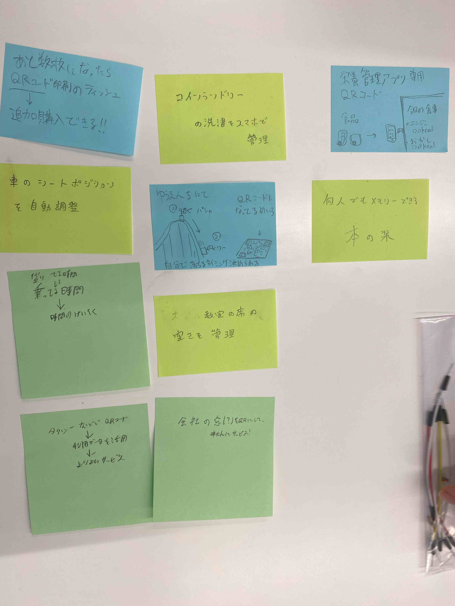
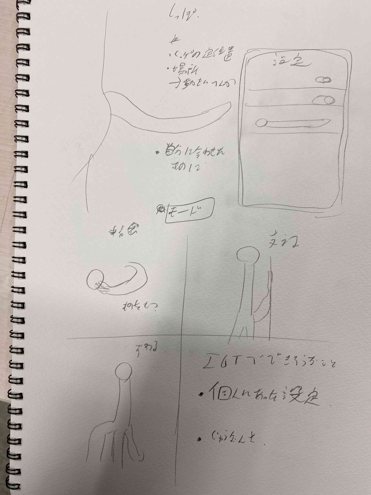
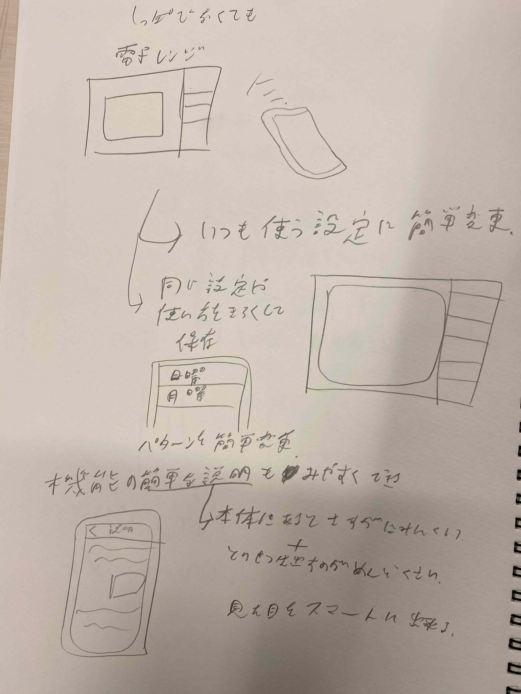
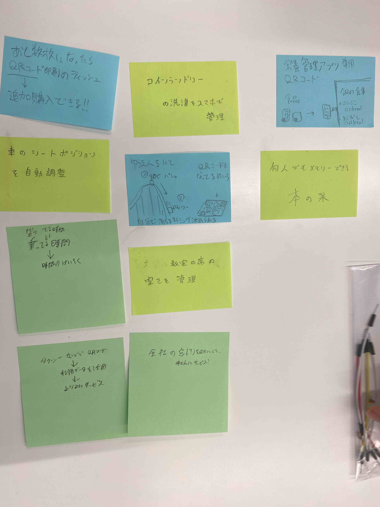
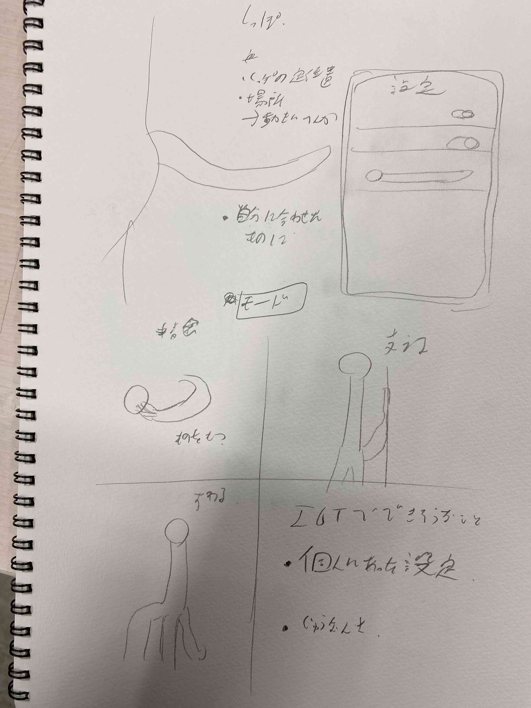
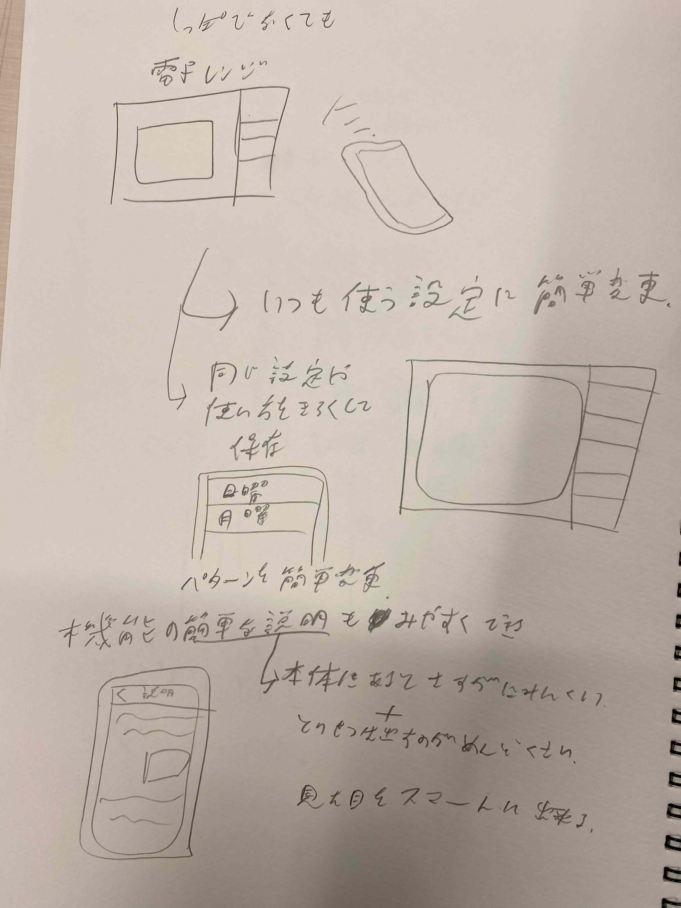

１．Iotとは何か
Iotとは、Internet of thingsの略称で「もののインターネット」ともよばれる。
ものをインターネットに接続し、サーバーを介して遠隔から操作したりするもののこと
ものをインターネットに接続し、サーバーを介して遠隔から操作したりするもののこと
２．Iotで何ができそうか
グループワークで出されたポストイットの画像

現実的なものから、多少飛躍的なものまである
現実的なもので言えば、座席の自動調節や、コインランドリーの進捗確認の意識が強かった。
自分で考えたもののスケッチ

前回の「プログラミングでものを動かす」と同じ題材としてしっぽをだした。
しっぽに限ったことではないが、自身が身に着ける機械ならば個人にあった設定に後から調整したり
することができる柔軟さがあると考えた。

別の例でいえば、電子レンジをスマホでも操作できるようにして、いつも使う設定を保存しておけるとか
久しく使っていない機能でも取説を出したりせずに簡単に確認できたりする機能はIotならではなのではないかと考えた

現実的なものから、多少飛躍的なものまである
現実的なもので言えば、座席の自動調節や、コインランドリーの進捗確認の意識が強かった。
自分で考えたもののスケッチ

前回の「プログラミングでものを動かす」と同じ題材としてしっぽをだした。
しっぽに限ったことではないが、自身が身に着ける機械ならば個人にあった設定に後から調整したり
することができる柔軟さがあると考えた。

別の例でいえば、電子レンジをスマホでも操作できるようにして、いつも使う設定を保存しておけるとか
久しく使っていない機能でも取説を出したりせずに簡単に確認できたりする機能はIotならではなのではないかと考えた